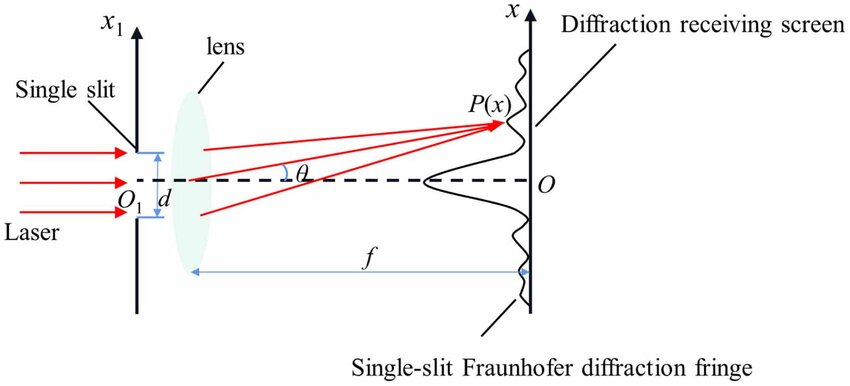

Fraunhofer Diffraction — Light Behavior in the Far Field
Developed by Joseph von Fraunhofer, who studied light using prisms and diffraction gratings, Fraunhofer diffraction occurs when the light source and screen are at a large distance, or lenses convert the waves into parallel rays.
Key Concepts
Plane Wavefronts
Incoming wavefronts become plane (flat), simplifying calculations.
Stable Patterns
Produces a clean, stable, symmetric diffraction pattern.
Final Pattern
Light has traveled far enough that wave curvature disappears.
Real-Life Implementations
- Spectrometers and wavelength measurement
- Diffraction gratings (CD/DVD rainbow colors)
- Telescope & microscope resolution calculations
- Laser beam shaping and optical communication
